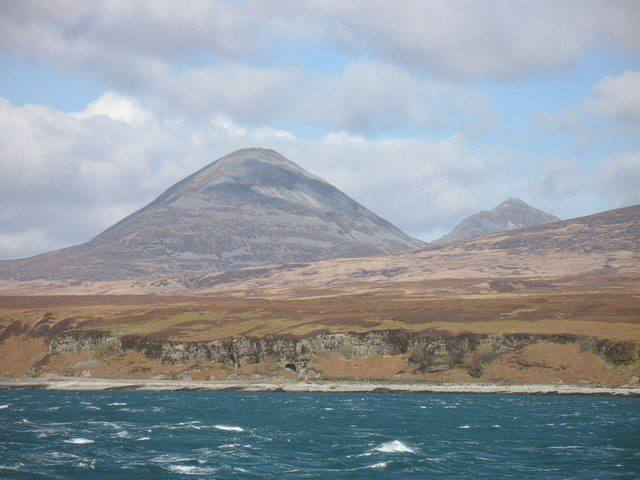
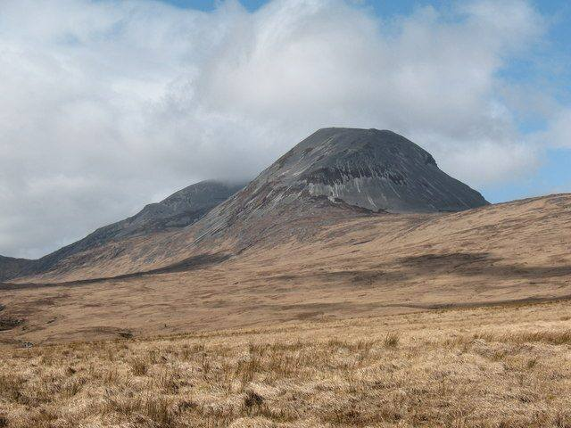
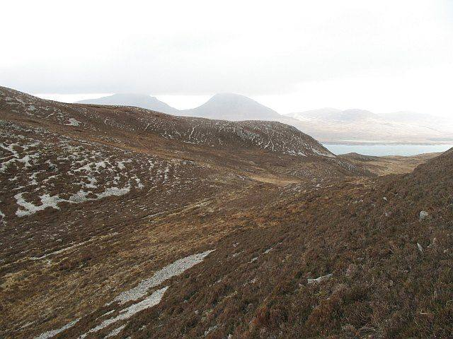

The three cone-shaped quartzite peaks that fill the view across the Sound all week. Beinn an Òir, the mountain of gold, is the highest at 785 metres.
Climbing all three is a serious hill day: about 15 km with 1,450 metres of ascent over scree and loose boulders, starting from the three-arch bridge near Craighouse. One walker took eight and a half hours.
Each year the Isle of Jura Fell Race goes over all three Paps and four more hills. For us, the better plan is to admire them: from the Sound on the way to Caol Ila, from the ferry to Feolin, or with a drink outside the Jura Hotel.
A walker’s account on Walkhighlands →What it looks like



Photographs from Wikimedia Commons: Thomas Andy Branson, CC BY-SA 4.0; Richard Webb, CC BY-SA 2.0; Gordon Hatton, CC BY-SA 2.0; Richard Webb, CC BY-SA 2.0. Prices are 2026 figures in pounds, with rand at £1 = R22.19. Check before booking.